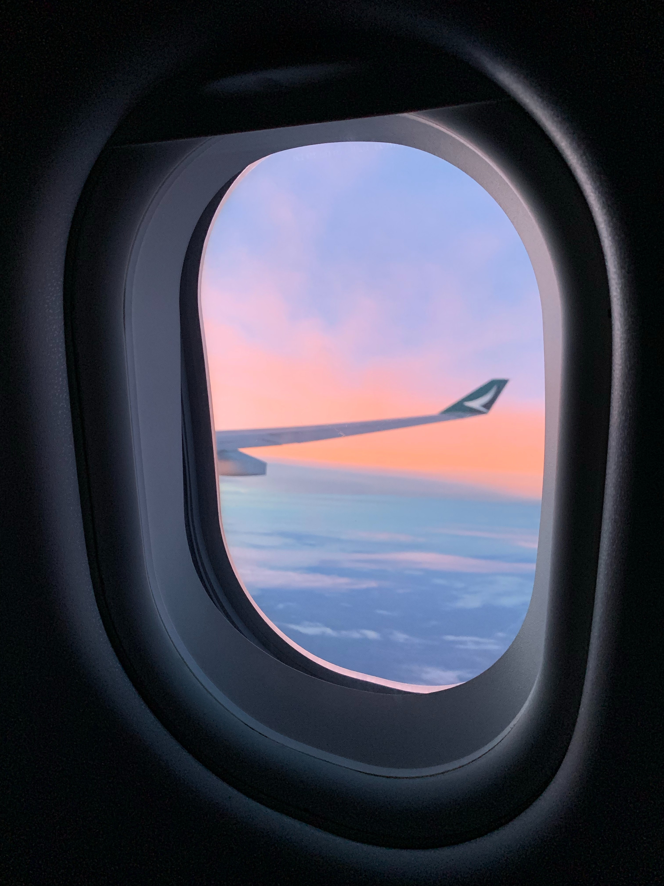
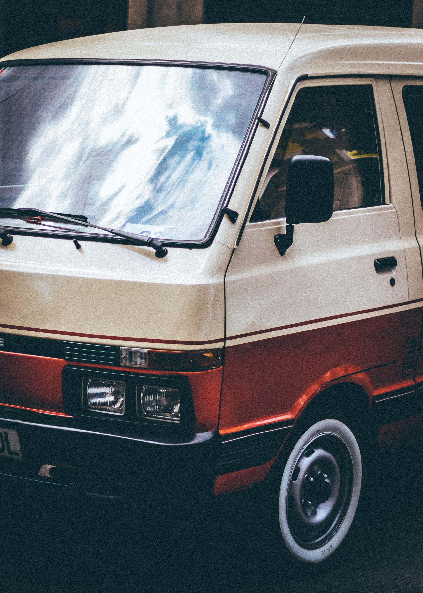
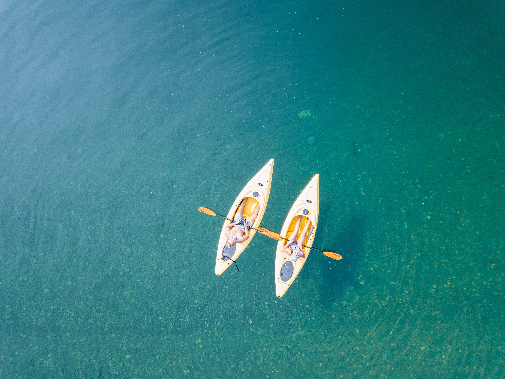
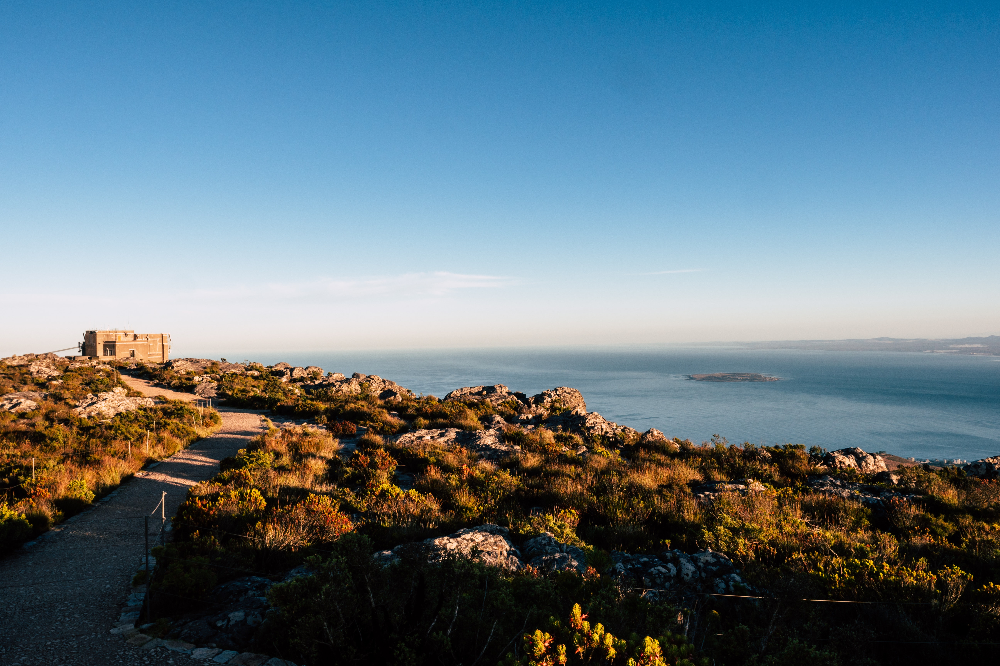
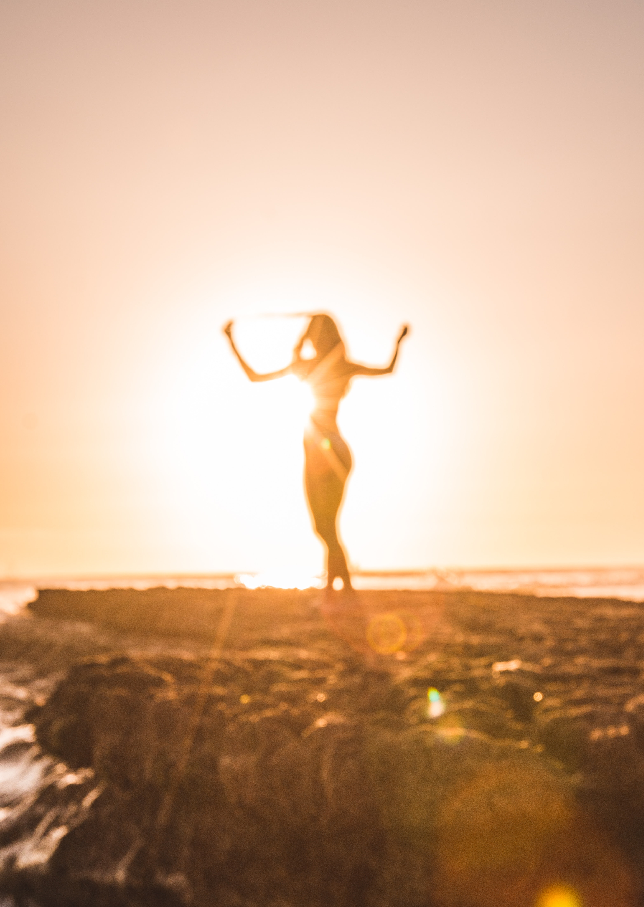
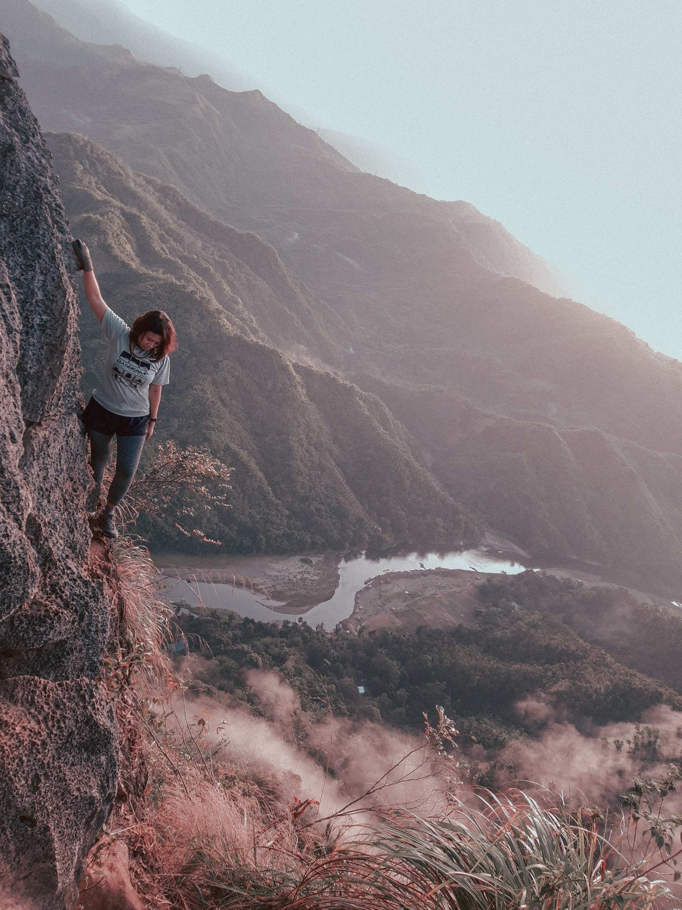

 <!DOCTYPE htlm>

 <htlm>
 	<head>
        <!-- Google tag (gtag.js) -->
        <script async src="https://www.googletagmanager.com/gtag/js?id=G-Q67S3GFDE6"></script>
        <script>
         window.dataLayer = window.dataLayer || [];
         function gtag(){dataLayer.push(arguments);}
         gtag('js', new Date());

         gtag('config', 'G-Q67S3GFDE6');
        </script>

        <div class="sidebar">
          <ul>
                <li><a href="#a-propos">À propos</a></li>
                <li><a href="#pourquoi-voyager">Pourquoi voyager !</a></li>
                <li><a href="#mes-conseils-voyage">Mes conseils voyage</a></li>
                <li><a href="#esprit-aventure">L'esprit d'aventure</a></li>
                <li><a href="#derniers-voyages">Mes derniers voyages</a></li>
                <li><a href="#bienfaits-voyage">Les bienfaits du voyage</a></li>
                <li><a href="#dernieres-videos">Dernières vidéos</a></li>
                <li><a href="#esprit-blog">L'esprit de ce blog</a></li>
            </ul>
        </div>

        <link rel="stylesheet" href="https://cdnjs.cloudflare.com/ajax/libs/font-awesome/5.15.3/css/all.min.css" />
        <title>L'Oiseau Rose | Blog voyage qui vous aide à voyager !</title>
        <meta name="description" content="Blog voyage truffé de bons conseils pour vos voyages. Suivez Camille sur son blog de voyage et envolez-vous vers le monde.">
        <meta charset="utf-8">
        <link rel="stylesheet" href="css/style.css">

 	</head>

 	<body>
        <div class="banner">
            <div class="container">
                <h1>L'Oiseau Rose !</h1>
                <h2>Blog voyage truffé de bons conseils pour vos voyages. Suivez-moi sur mon blog de voyage et envolez-vous vers le monde.</h2>
                <a href="#apply-section" class="btn-purple">Abonne-toi à la newsletter pour suivre toutes mes aventures !</a>
            </div>    
        </div>    

        <div class="container">
            <div class="card-purple" id="a-propos">
                <h1>Blog voyage L'Oiseau Rose !</h1>
                    <p>
                        Hello, moi c'est Camille et mon objectif est d'inspirer les voyageurs à réaliser pleinement leurs rêves !
                        Je suis ravie de t'accueillir sur mon blog de voyage.
                        Après avoir parcouru le monde, j'ai complètement changé ma vie et ma passion pour les voyages est devenue mon métier.
                        Maintenant, mon but est de t'aider à planifier tes futurs voyages et à vivre la vie dont tu rêves, remplie d'aventures et de liberté !
                    </p>
            </div>
        </div>

        <div class="container" id="pourquoi-voyager">
            <h2>Pourquoi voyager !</h2>
                <div class="cards">
                    <div class="card">
                        
                        <h3>Voyager, c'est découvrir l'inconnu et se découvrir soi-même</h3>
                    </div>
                    <div class="card">
                        
                        <h3>Les voyages créent des souvenirs inoubliables qui resteront gravés à jamais dans ton cœur</h3>
                    </div>
                    <div class="card">
                        
                        <h3>Voyager te permet de sortir de ta zone de confort et de grandir en tant qu'individu</h3>
                    </div>
            </div>
        </div>

        <div class="container" id="mes-conseils-voyage">
            <h2>Mes conseils voyage pour voyager en toute sérénité</h2>
            <div class="second-card">
                
                    <h3>Mes conseils et pratiques</h3>
                    <p>
                        Lorsqu'on voyage, il y a certaines choses de base à prendre en compte pour éviter les tracas et profiter pleinement de son voyage. Tout d'abord, il est important de faire des recherches sur la destination que tu prévois de visiter. Informe-toi sur les lois et les coutumes locales, la météo et les moyens de transport disponibles. Ensuite, n'oublie pas d'emporter l'essentiel : des vêtements confortables et adaptés à la météo, un sac à dos pour transporter tes affaires, des médicaments et une trousse de premiers soins, une carte ou un GPS pour te repérer, et bien sûr ton passeport ou ta carte d'identité si nécessaire. Enfin, sois flexible et ouvert d'esprit : les voyages ne se déroulent pas toujours comme prévu, mais c'est souvent ce qui rend l'expérience plus riche et inoubliable. En respectant ces quelques conseils de base, tu pourras profiter pleinement de ton voyage en toute sérénité.
                    </p>
            </div>
        </div>

        <div class="container" id="esprit-aventure">
            <h2>L'esprit d'aventure en voyage : la clé de découvertes inoubliables</h2>
            <div class="second-card">
                
                    <h3>Voyager avec audace et curiosité</h3>
                    <p>
                        L'esprit d'aventure est une qualité essentielle pour les voyageurs qui souhaitent découvrir des destinations inconnues et explorer de nouveaux horizons. Cela implique d'être ouvert d'esprit, curieux, et prêt à sortir de sa zone de confort. Lorsque tu te laisses porter par l'aventure, tu découvres souvent des choses inattendues, des paysages magnifiques et des cultures fascinantes.

                        Je peux personnellement témoigner des merveilles que l'on peut découvrir en voyageant avec un esprit d'aventure. J'ai fait des voyages fantastiques dans des pays incroyables sur un coup de tête et j'ai appris tellement de choses en étant une baroudeuse. J'ai découvert des endroits étonnants, goûté des plats délicieux, rencontré des gens formidables et vécu des aventures que je n'oublierai jamais. Cela peut sembler effrayant ou risqué pour certains, mais je pense que l'aventure est une expérience de vie incroyable qui en vaut vraiment la peine.
                    </p>
            </div>
        </div>

        <div class="container" id="derniers-voyages">
            <h2>Mes derniers voyages</h2>
                <div class="cards">
                    <div class="card">
                        
                        <h3>Tokyo</h3>
                        <p>Culture fascinante, gastronomie délicieuse, technologie de pointe, ambiance électrique, contrastes étonnants.</p>
                    </div>
                    <div class="card">
                        
                        <h3>Islande</h3>
                        <p>Paysages à couper le souffle, aurores boréales spectaculaires, piscines naturelles relaxantes, population chaleureuse, nature brute.</p>
                    </div>
                    <div class="card">
                        
                        <h3>Copenhague</h3>
                        <p>Ville écologique, architecture moderne, ambiance détendue, design scandinave, gastronomie inventive.</p>
                    </div>
                    <div class="card">
                        
                        <h3>Bali</h3>
                        <p>Spiritualité apaisante, plages paradisiaques, temples fascinants, rizières verdoyantes, hospitalité exceptionnelle.</p>
                    </div>
                    <div class="card">
                        
                        <h3>Cape Town</h3>
                        <p>Paysages variés, histoire passionnante, faune exceptionnelle, vin de qualité, culture vibrante.</p>
                    </div>
            </div>
        </div>

        <div class="container" id="bienfaits-voyage">
            <h2>Les bienfaits du voyage sur la santé mentale et physique</h2>
                <div class="cards">
                    <div class="card">
                        
                        <h3>Déconnecte-toi : le voyage permet de prendre une pause et de se libérer des soucis.</h3>
                    </div>
                    <div class="card">
                        
                        <h3>Explore de nouveaux endroits : découvrir de nouveaux lieux stimule le cerveau et favorise la créativité.</h3>
                    </div>
                    <div class="card">
                        
                        <h3>Essaie des activités différentes : sortir de sa zone de confort est bénéfique pour la santé mentale et physique.</h3>
                    </div>
                    <div class="card">
                        
                        <h3>Prends soin de toi : le voyage peut être épuisant, alors n'oublie pas de prendre soin de toi en voyageant.</h3>
                    </div>
            </div>
        </div>

        <div class="videos" id="dernieres-videos">
            <div class="container">
                <h2>Mes dernières vidéos</h2>
                <iframe width="370" height="215" src="https://www.youtube.com/embed/SK1RpY1uBxU" frameborder="0" allow="autoplay; encrypted-media" allowfullscreen></iframe>
                <iframe width="370" height="215" src="https://www.youtube.com/embed/Y5I6f4kMSkE" frameborder="0" allow="autoplay; encrypted-media" allowfullscreen></iframe>
                <iframe width="370" height="215" src="https://www.youtube.com/embed/j9HJngwC34A" frameborder="0" allow="autoplay; encrypted-media" allowfullscreen></iframe>
            </div>
        </div>


        <div class="banner-end" id="esprit-blog">
            <div class="banner-content">
                <h2>L'esprit de ce blog de voyage ?</h2>
                <p>Trouve de l'inspiration et de nombreux conseils pour tes futurs séjours sur L'Oiseau Rose!

                L'on pense souvent, à tort, qu'il faut énormément d'argent pour voyager et que ça n'est pas accessible à tout le monde. Mais il existe une multitude de manières efficaces de réduire son budget voyage.

                Je sais également qu'au-delà du problème d'argent, il est parfois difficile de faire face à sa peur de l'inconnu, et de trouver la force de vivre ses rêves... Mais si tu veux vraiment savoir comment partir plus souvent et plus longtemps, tu es au bon endroit ! Avec mon blog, tu auras toutes les cartes en main pour vivre tes rêves de voyage.

                Enfin, ma rubrique « vivre de ta passion » t'aidera si tu souhaites créer ton propre blog.</p>
            </div>
        </div>

        <div id="apply-section">
            <div data-tf-widget="KUQxA0bF" data-tf-opacity="100" data-tf-iframe-props="title=Newsletter subscription - L'Oiseau Rose" data-tf-transitive-search-params data-tf-medium="snippet" style="width:100%;height:500px;"></div><script src="//embed.typeform.com/next/embed.js"></script>
        </div>
        
        <div class="end-page">
            <div class="social-links">
                <a href="https://www.facebook.com/loiseaurose" target="_blank"><i class="fab fa-facebook fa-2x"></i></a>
                <a href="https://www.instagram.com/loiseaurose/" target="_blank"><i class="fab fa-instagram fa-2x"></i></a>
                <a href="https://twitter.com/loiseaurose" target="_blank"><i class="fab fa-twitter fa-2x"></i></a>
            </div>
                <p>L'aventure est un état d'esprit, envisagez vos voyages différemment !</p>
        </div>

 	</body>

 </htlm>
